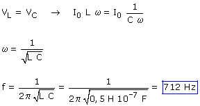
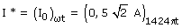
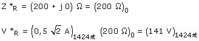
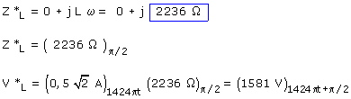

La tensión en la bobina y el condensador son iguales (Módulo):  Intensidad compleja:  Resistencia  Bobina:  La tensión en el condensador es igual a la de la bobina en módulo y con fase opuesta V*C = (1581 V)1424π-π/2 La f.e.m aplicada o tensión en bornes del circuito será:
|